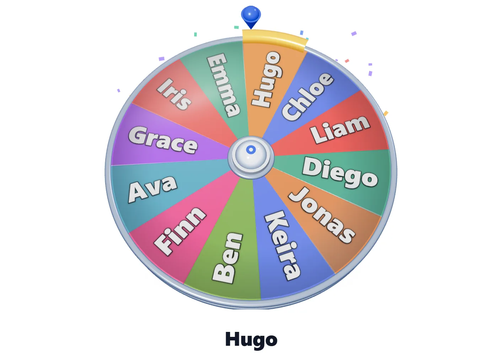

Home › Raffle name picker
A fair raffle name picker for prize draws and door prizes
A prize draw often ends with the same question: “why is it always her?”. Not because anyone cheated — a manual draw, folded slips in a glass, or numbers called out in turn are hard to prove fair in front of a room. A name wheel settles it: every name is on the wheel, and the winner is decided by the tool, not by whoever holds the glass.
Open the raffle name picker paste the names, spin once
Why a draw needs a picker everyone can see
A draw involves money and trust. When the winner is picked out of sight, one small suspicion can spoil the next meeting. The name wheel keeps the whole list on screen, spins every name at once, and stops on one. Everyone watches the same process — that is what makes the result hard to argue with.

How to run a raffle with the name wheel
- Collect the names once, one per line. The list is saved on the device, so next month you don't retype it.
- Show the wheel to everyone — on a projector, a laptop, or a phone passed around. Don't spin it quietly at the back.
- Press Spin and let the wheel stop on its own. Don't stop it early or spin again because the result isn't what you hoped for.
- Write the winner down in the draw record, then remove the name from the list for the next round if the draw runs in turns.
Try it right here
Paste the names and spin. No sign-up, and nothing is sent to a server.
The tool above runs on this page. If the screen feels cramped, open a full tab.
Three rules that stop the arguments
- Spin in front of everyone. What makes a draw credible isn't the number, it's that everyone watched the process.
- Don't re-spin. Repeat a result once and every later result loses credibility for good.
- Keep the list and the result. Write the winner's name and the date in the draw record, the same way you keep deposit receipts.
Family, club and office draws: the difference is the number of names
| Kind of draw | Usually | How to use the wheel |
|---|---|---|
| Family party | 12–30 names | One spin for one winner per meeting |
| Club or neighborhood prize draw | 20–60 names | Above 30 names, split into two rounds |
| Staff room draw | 8–20 names | A phone passed around is enough |
| Online draw | spread out | Share the wheel link, then one person spins with the screen shared |
Above 30 names — usually a club or neighborhood draw — the wheel still runs, but the labels get smaller. On an auditorium projector, split the list into two rounds: names that already appeared don't need repeating.
When names are added in the middle of a season
Add the new names on the next line and spin as usual. Winners don't need removing if the draw is a free raffle; but if it runs in turns — everyone wins exactly once — remove the winner after recording it, so nobody is picked twice.
Keeping a record of the draw
The person running the draw gets asked: “who won last month?”. An answer that lives only in someone's memory gets forgotten and disputed. Easiest: when the wheel stops, take a screenshot, save it in a folder for the draw, and write the date in the record book. If the draw runs in a group chat, send the screenshot so every member holds the same record.
If the draw runs in turns, take the winner off the list once it is recorded: nobody is picked twice in one season, and the wheel always matches the turns left.
Frequently asked questions
Is this raffle name picker really random?
Yes. The winner comes from the browser's random number generator, not from the order of the list. Nothing is weighted and no name is favored.
Do I need internet to spin the wheel?
No, once the page has been opened one time. The wheel files are cached by the browser, so a meeting in a house without Wi-Fi can still spin.
How many names can I add?
There is no hard limit. Above 20 names the labels shrink automatically to stay readable; above 30 names, consider splitting the draw into rounds.
Is my member list stored on a server?
No. The list is stored only on the device you use. The site counts anonymous visits, with no names and no list contents.